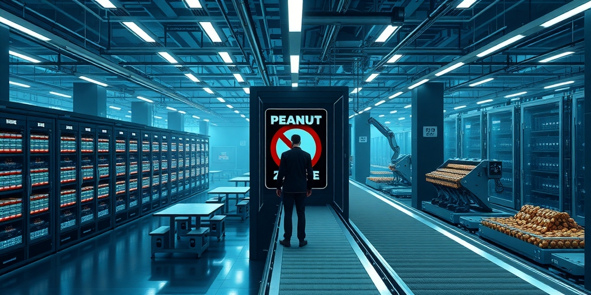

小汪老师的成长洞察 · 属于你的成长专栏
塔勒布在朋友家的烧烤聚会上，递给一位严守洁食的友人一杯柠檬水。对方喝了下去。他翻过包装盒，找到一个极小的U型标记。那一刻他意识到：美国不到0.3%的人口决定了所有饮料的配方。这并非民主的胜利，而是一条冷酷的社会动力学定律——最不宽容的人最终统治了宽容的多数。
塔勒布在《非对称风险》里记下了那个改变他认知的瞬间。在复杂系统研究所的夏日烧烤聚会上，他递出一杯柠檬水。那位虔敬的犹太朋友没有检查标签，直接喝了。另一位洁食者解释说：“这里的液体都是洁食的。”塔勒布翻看包装盒，找到了那个微小的认证标记。
他迅速意识到一个被忽视的事实：美国只有不到百分之零点三的人口严格遵守洁食规定。但超市货架上的饮料、零食、调味品，几乎全线通过洁食认证。生产商没有做市场调查来满足多数人的偏好。他们只算了一笔简单的账——维护两条独立生产线的成本，远高于让所有产品都通过认证。
这背后不是文化尊重，不是商业策略。是一条数学定律在运行。少数派的不妥协，像一个单向阀门，把整个系统的输出锁定在了他们能接受的那个选项上。

这一定律的核心机制极其简单。假设人群分为两类：A群体“只接受X，拒绝Y”，B群体“X和Y都可以接受”。系统最终的均衡态必然是所有人都在用X。B群体的灵活性不是优势，而是结构性的弱点。
花生过敏学校的案例完美呈现了这一点。过敏儿童的家长绝对不能接受学校里有花生制品。非过敏儿童的家长无所谓——有花生也行，没有也行。学校管理者面对的选择立刻简化：全面禁止花生，所有学生安全，不激怒任何人；允许花生，一部分学生面临生命危险，激怒一小群愤怒至极的家长。结果不言自明。
残疾人卫生间遵循同一逻辑。残疾人无法使用普通卫生间，但健全人可以使用残疾人卫生间。于是每一栋公共建筑都配备了无障碍设施——这不是多数人投票的结果，是因为少数人的需求不可协商。宽容者的那句“我都可以”，每一次都在把决策权拱手让给绝不妥协的那一方。
更隐蔽的是第二层效应。一个不宽容群体的成功会向所有其他潜在的不宽容者发送信号：这个策略有效。洁食认证成为饮料行业标准后，清真认证自然跟进。“恐花生”学校成为常态后，对其他过敏原的零容忍政策随之蔓延。
每一次不宽容者的胜利都在推动社会规范朝着同一个方向漂移——更不宽容的方向。宽容者永远在退让，不宽容者永远在推进。这个漂移不会自然停止，因为多数派的灵活性让它永远无法成为反向推动的力量。
端午安康现象是这条定律在中国最精确的投影。一个根本不存在的“杨广宇教授”，一条虚构的民俗禁忌，之所以能改写全体中国人的端午祝福语，不是因为论证有力，而是因为“安康警察”满足全部条件：他们绝不说快乐，且会纠正每一个说快乐的人。多数人的反应是“好吧那就说安康，省得被纠正”。没有反向的不宽容力量去纠正说安康的人。几轮迭代之后，整个朋友圈都是安康。一个谎言，因为追随者足够不宽容，打败了宽容的真相。
塔勒布定律让民主直觉彻底失灵。人类的制度设计建立在一个默认假设上：多数人决定结果。投票、选举、民意调查，都基于“多数统治”的信念。但这条定律揭示了一个制度无法捕捉的漏洞：当争议的维度不是“投票”而是“谁能忍受什么”时，少数派的偏好权重会被无限放大。
投票假设每个人对每件事的偏好强度均等。现实世界里，一个花生过敏儿童家长对“学校有没有花生”的在意程度，可能是一个普通家长的一千倍。投票系统无法捕捉这个差异，但社会系统每天都在处理它。不宽容少数派施加的不是意见，是行为限制。大多数人选择遵守，因为对抗的成本高于遵守的成本。
用约束式与检测式的框架来看，辩论、投票、讲道理都是检测式手段，可以忽略。而不妥协是一种约束式力量，要么遵守，要么对抗。你无法用道理说服一个拒绝妥协的人，因为他的立场不是基于“哪种方案更优”，而是基于“我绝不可能接受另一种方案”。这就是为什么每一次社会规范的漂移回头看都显得“莫名其妙”——它不是被说服的，是被迫的。
写给你的话
塔勒布本人对这条定律的运用极为谨慎。他指出，同样的机制既能让独裁者上台，也能让民权运动成功。甘地是不宽容的，马丁·路德·金是不宽容的。不宽容本身不是恶，它是一个工具。真正值得追问的是：你愿意为了什么成为一个不宽容的人？这个问题的答案，比你所有的宽容加起来，更能定义你是谁。下次你发现自己又改口说了“安康”，不妨想一想，你是真的认同这个说法，还是因为有人不让你说“快乐”。
小汪老师的成长洞察 · 属于你的成长专栏